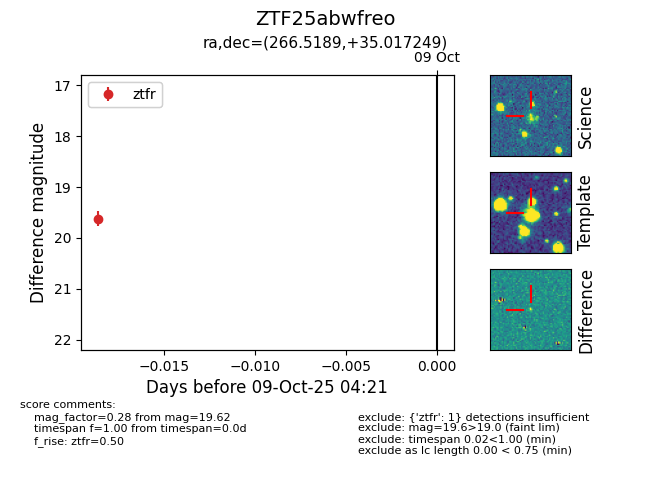

FINK: ZTF25abwfreo
Lasair: ZTF25abwfreo
ALeRCE: ZTF25abwfreo
ZTF25abwfreo (ztf,fink)
equatorial (ra, dec) = (266.5189,+35.01725)
galactic (l, b) = (60.2318,+27.82174)

last ztfr=19.62
1 ztfr detections